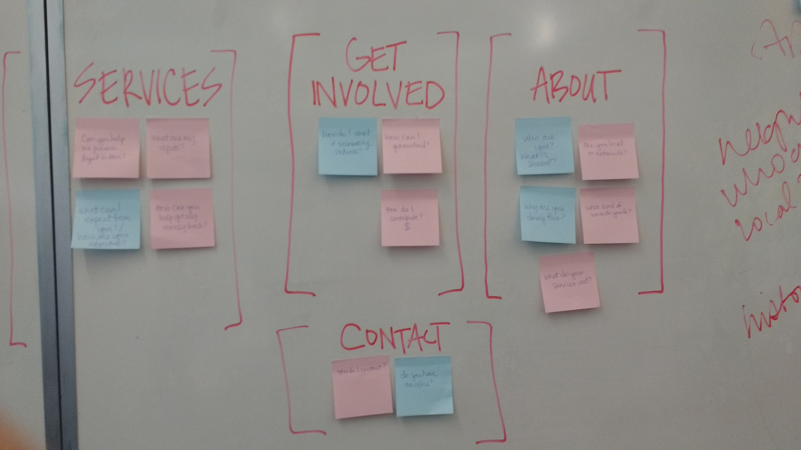
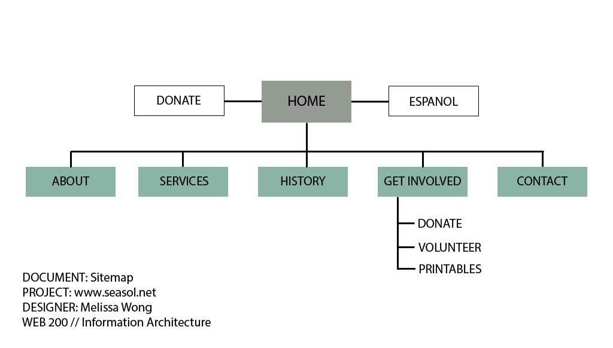

WEB 200: Information Architecture
Seattle Solidarity Network (seasol.net)
Overview
Assessing a site's information architecture is a critical component to effective web design. Content is useless if it can't be found, thus a successful website must be intuitive to navigate. To plan for this, it is important to approach the project from a top-down perspective (the information the client is trying to promote/output to the world) and a bottom-up perspective (how to best organize the content in a way that is easy for users to find and in few clicks as possible). It is a common mistake to overlook the latter, but it is arguably the more important of the two. The site visitors rely on logical organization of content and appropriately named labels of that content to locate information that is not featured on the home page.
The Process:
Top-Down (Client) Perspective
Seattle Solidarity Network is a network of volunteers that strive "to build a powerful and democratic working class movement," by standing up to unethical business practices through collective action and mutual support. Their current site features a blog feed as the home page, and further divides the content between six main navigation links:
- About: a main page that mostly functions as an FAQ section
- Subscribe/Contact: a main page that features a basic contact form and a local number that directs to a voicemail box
- History: a main page that lists their blog posts by title in chronological order
- Posters: a main page that links to a disorganized list of links to flyers that anyone can download and distribute
- Donate: a main page that by provides a link to their PayPal site to contribute with monthly donations, and an address to their P.O. Box to send donations via checks
- Espanol: spanish version of the entire site
Organizers within the group have indicated that their main site visitors can be divided into two groups: people that need help and people that are looking to help. A third group should also be taken into account as well, which is the people that have been contacted by SeaSol on behalf of mistreated workers/tenants. This group may be looking to see what SeaSol actually does during their fights, how successful they are, and what they can do to end their own engagement. Others may have ill intentions toward the organization. For this reason, screening requests for contact becomes more valuable than adding another subscriber to a mailing list.
Bottom-Up (Users) Perspective
For this portion, I generated a list of potential questions visitors may have while exploring the site. These questions are divided into the three different user perspectives identified in the previous section.
Group 1: Looking to Help
- How do I contribute money?
- How do I volunteer?
- Are you hiring?
- How do I start a solidarity network in my area?
- Are there other organizations like you?
- Do you have anything I can distribute to others?
- What do volunteers do?
- Why should I donate?
Group 2: Looking for Help
- Are you local or nationwide?
- What is SeaSol?
- How can SeaSol help me?
- Do you have an office?
- How do I contact you?
- What do your services cost?
- What are my rights as a tenant/worker?
- Is it a problem if I have a language barrier?
- Why do you do what you do?
- Can you provide legal assistance?
Group 3: Employers/Landlords
- What is SeaSol?
- Why are they contacting me?
- How do I make SeaSol go away?
- What can they do?
- Is this legitimate?
- What should I expect from this group?
Affinity Diagram
Next, each question was written on its own post it note. Within a small group, each question was systematically sorted with other questions of a similar theme, thereby organizing the representative content into meaningful groups. With the use of this 'Affinity Diagramming usability inspection method,' a visual hierarchy naturally emerges, providing the basis for a new sitemap.
Sitemap
With the skeletal form of the sitemap, you can modify the structure as needed to take into account any additional sections that should be implemented in the final design. For instance, adding a page to highlight success stories would serve two main functions:
- Demonstrate the power of strength in numbers to those who feel helpless
- Provide businesses with reasons to take SeaSol seriously
Many of the people who come to SeaSol for help may be fluent in English. Although there are translation services available on a volunteer or crowdsourced basis, they do provide a version of the site in Spanish. I decided to remove this link from the main navigation, and instead place it in a more prominent area. Likewise, a donation link should be featured in a more obvious way. Otherwise the general categories created during the affinity diagramming exercise should function well for the purpose of this site. The last significant change I made was converting the 'Posters' section into a sub-page of the 'Get Involved' main page.
Just as it's important to group information into categories that make sense, properly naming each category is critical to efficient sitemap navigation. Users are likely to click on the first link that is reasonably associated with the information they are seeking out. Thus, it is best to select labels that are obvious and reasonably broad.
